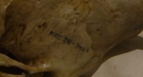
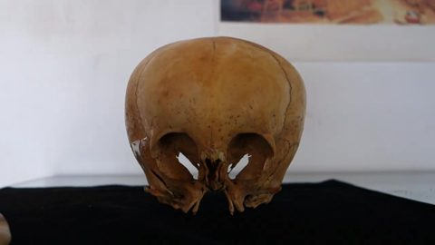
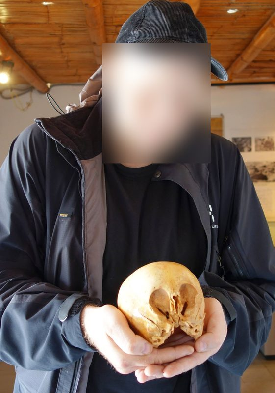

Mitä kallot kertovat?

Kallon kyljessä näkyy musteella kirjoitettu MRI DB. Voisiko muutama kirjain kertoa, mistä tämä kallo on peräisin ja missä sen tiedot ovat? Tämä sivu seuraa vihjettä niin pitkälle kuin avatut lähteet kantavat.

Miten aineisto kertyi
”Olen seikkaillut ympäri maapalloa, ja tässä pitelen kädessäni Starchild 2 -kalloa.”
- Peru 1.11.2014. Jani kuvasi Perun museoissa ja yksityiskokoelmassa pitkiä kalloja. Kuvat 01 ja 03–11 ovat tämän käynnin valokuvia; kuvissa 03 ja 04 kalloa pitelee Jani itse. Travel South -videoilla kokoelman omistaja kertoo kalloistaan, Starchild 2 esitellään nimeltä ja yhden museon takahuoneessa kuvaaminen sallittiin erikseen. Kuva 02 on kooste näistä videoista.
- Kairo 15.2.2024. Egyptiläisessä museossa vastaan tuli kivipäitä, joiden päälaki jatkuu samalla tavalla pitkälle taakse.
- Arkisto 2026. Kuvat, videot ja avoimet lähteet käytiin läpi: museo-oppaat, esinekortit ja tutkimukset.
Janin muistiinpano: kallot 2014
Lähtöpiste oli Liman Miraflores, joka vaikutti turistin silmin paljon turvallisemmalta kuin Callao kolme vuotta aiemmin. Carmen kyyditsi minut sieltä ja järjesti tapaamisen Museo Histórico Paracasiin. Carmen on asianajaja, ja hän puhui inkasuvustaan ylpeänä.
Museon tavallinen näyttely on yleisölle avoin. Omistajalla on lisäksi yleisöltä suljettu yksityiskokoelma, ja sinne pääsin 1.11.2014. Luvan pitää kalloa kädessä antoi museon johtaja, jonka yksityiskokoelma se oli; käsitykseni mukaan hän omisti koko museon. Kun otin kallon käteen, Carmen ja muut paikalla olleet alkoivat taikauskoisina poistua kiireesti huoneesta ja sanoivat tuntevansa jotain outoa. L Se oli heidän kokemuksensa, ei todettu ilmiö. Kuvat 03 ja 04, joissa pitelen kalloja, otti Carmen.
L Museonjohtaja ja kokoelman omistaja kertoi rahoittavansa museon toimintaa erikoisilla kalloillaan; se ei yksin tarkoita kallojen myyntiä. Videolla _IlZYy2Mbpk hän sanoo espanjaksi: ”No, es que … para mantener este museo” (”…tämän museon ylläpitämiseksi”).
Tärkein kuva minulle on kuva 04. Se on ainoa hetki, jolloin en katsonut historiaa lasin läpi.
Kolme kysymystä
- Mihin kallon tunnus johtaa? Musteella kirjoitettu MRI DB ja museon esinekortit.
- Miksi tätä kutsutaan Starchild 2:ksi? Nimi on lainattu kuuluisammasta kallosta Meksikosta.
- Miksi pitkä pää toistuu Kairon kivikuvissa? Amarnan taide ja Perun kallot rinnakkain.
Matkan varrella: kolmen hiuksia säilyttäneen pään vitriini, kokoelman omistajan kertomus ja mitä tutkimukset sanovat. Kaikki yksitoista kuvaa havaintoineen ovat lopun kuvahakemistossa.
Kuvien kallot ovat ihmisten jäänteitä. Sivu kertoo vain sen, mitä valokuvissa ja näyttelyteksteissä näkyy ja mitä julkaistu tutkimus sanoo. Valokuvasta ei voi päätellä vainajan ikää, sairauksia eikä alkuperää.
Kuvat 01 ja 03–11 on otettu Perussa vuonna 2014 Jani Korven kameralla (kuvat 03 ja 04 otti Carmen), samalta käynniltä kuin 1.11.2014 kuvatut museovideot. Kuva 02 on kooste näistä videoista. Vuosi perustuu videoiden alkuperäisiin tiedostonimiin (20141101…): kuvien 01 ja 08 asetelmat näkyvät samoina videoilla _IlZYy2Mbpk ja qlPq2wTEFEc, ja Travel Southin vuoden 2011 Perun-videoissa ei ole kallo- eikä museokuvia. Vasen ja oikea tarkoittavat katsojan vasenta ja oikeaa. Sama esine voi näkyä useassa kuvassa.
Miten merkinnät luetaan
- T
- Tutkimustulos
- A
- Kronikan kertomus tai muu asiakirja
- L
- Legenda tai kertomus
- S
- Spekulaatio
Katso, miten kallon muodosta syntyi kuviteltu hahmoKivikaupungin kasvot: 13 kuvaparia. Tekoälykuvitus, fiktio, ei tutkimustietoa.
Vanha valokuva, uusi jäljityskysymys: mihin MRI DB johtaa?


- Mitä kuvassa näkyy. Oikeanpuoleisen kallon kyljessä on käsin kirjoitettu MRI DB ja numerosarja. Numero näyttää mahdollisesti luvulta 3421, mutta loppu on epävarma, joten lukutapa jätetään avoimeksi.
- Vertailu museoaineistoon. A García Soton vuoden 2018 raportin sivulla 25 on Ican alueellisen museon esinekortti. Sen kohdassa ”Otros códigos e inscripciones” lukee MRI-DB-3869. Kortin kallo on Museo Regional de Ica ”Adolfo Bermúdez Jenkins” -museossa, löytöpaikaksi on merkitty Hacienda Chongos ja muuksi koodiksi MRI-01050-12 [2].
- Tulos. Tunnusmuodolle löytyi vastine: sama MRI-DB-alku on käytössä Ican museon esinekorteissa. Yksilöosuma on avoin. Numerot eivät täsmää, eikä pelkkä alkuosa tunnista Janin kuvaamaa kalloa tai yhdistä sitä raportin DNA-tuloksiin.
- Seuraava kysymys. Koko numeron varmistaminen tarkemmasta kuvasta ja sitä vastaava luettelokortti museolta.
Kolme paikkaa pidetään erillään. Raportin kallot ja esinekortit ovat Ican alueellisesta museosta [2], joka on eri laitos kuin Navarron museo [3]. Kolmen hiuksia säilyttäneen pään vitriini ja kokoelman omistajan kertomus ovat Navarron museosta Paracasista (vitriini). Takahuoneen nimeä ei näy videolla (takahuone). Kuvan 08 kuvauspaikkaa ei ole varmistettu, eikä yhden paikan tunnistus tunnista koko aineistoa. Käänteinen kuvahaku kaikilla Janin kallokuvilla (20.11.2026) ei löytänyt samoja vitriinejä tai lappuja muualta verkosta. Matkailijan TripAdvisor-kuvassa Navarron museosta näkyy samantyyppinen lasihyllyvitriini kuin kuvassa 07, mutta samoja kalloja siitä ei voi tunnistaa [20].
Kolmen hiuksia säilyttäneen pään vitriini
Janin videossa dNgc018HQNA kolme päätä lepää erillisillä lasijalustoilla. Vasemmanpuoleisen pään sivua ympäröi tumma hiusmainen aines. Keskimmäinen on pitkänomainen vaalea kallo, jonka päälaella on tumma hiusalue. Oikeanpuoleinen, muita pienempi tumma pää on omalla alustallaan.
Perun kulttuuriministeriön vuoden 2023 museo-oppaan sivulla 175 näkyvät hyvin samannäköiset kolme päätä samassa järjestyksessä lasijalustoilla. Video on kuvattu Paracasin Museo Histórico Paracas ”Juan Navarro Hierro” -museossa. Opas esittelee museon tällä nimellä, ja sitä hallinnoi Navarron perhe [1]. Jani Korpi vahvisti kuvauspaikan vuonna 2026. Ican alueellinen museo on eri laitos [3]. Opas ei vahvista perhesuhdetta, yhteistä hautaa eikä muiden kuvien kuvauspaikkaa. Valo ja kuvakulma eroavat oppaan kuvasta.

Kokoelman omistajan kertomus
L Videolla dNgc018HQNA (kuvattu 1.11.2014) kertojana on kokoelman omistaja Museo Histórico Paracas ”Juan Navarro Hierro” -museossa. Hänen mukaansa kokoelma on kansallisperintöä mutta hänen omistuksessaan. Hän sanoo, ettei yksi kallo ole Amerikasta, ja kertoo sen DNA:n vastaavan Pohjois-Eurooppaa: Norjaa, Ruotsia, Suomea tai Venäjää. Kolmen hiuksia säilyttäneen pään vitriinistä hän kertoo, että isä, äiti ja vauva löydettiin samasta haudasta ja että isän ja äidin hiukset olivat punaiset ja vauvan vaaleat. Omistaja ei näytä videolla tutkimusraporttia, laboratoriota eikä näytetunnusta.
Löytyykö kuvan yksilölle tutkimustunnusta? Ei löytynyt. Vitriinin päille ei näy luettavaa tunnusta, eikä museo-opas mainitse DNA-tutkimusta [1]. García Soton raportissa yhdestä Cerro Coloradon ryöstetyn haudan kallosta (S8) saatiin mitokondrioryhmä H, joka raportin mukaan on tyypillinen Pohjois-Euroopassa. Mitokondrio-DNA kuvaa kuitenkin vain yhtä äitilinjaa, eikä H-haploryhmä yksin paikanna ihmistä Pohjois-Eurooppaan: se on yleinen myös esimerkiksi Pohjois-Afrikassa (Ennafaa ym. 2009). Samasta kallosta saatiin toisesta näytteestä ryhmä B5 [2]. Saman kallon erilaiset tulokset vaativat selvittämistä. Raporttia ei ole vertaisarvioitu, radiohiiliajoituksia ei saatu, eikä raportti osoita muinais-DNA:n aitoutta; nykyaikainen kontaminaatio on tällaisissa näytteissä tavallinen selitys, joka pitää sulkea pois (Renaud ym. 2019). Raportin kallot ovat Ican alueellisen museon varastossa, eikä mikään niistä ole yhdistettävissä tämän vitriinin päihin.
Videoiden kysymysmuotoiset otsikot, kuten ”Ancient Skulls of Peru: Evidence of an Advanced Human Species?” (aqPy1X1mhGY) ja ”Ancient Skulls of humanoids: Proof of an Advanced Human Species?” (yIA-Dykw_40), ovat videoiden nimiä S . Julkaistu tutkimus ei tue ajatusta erillisestä ihmislajista: tutkituissa Paracasin aineistoissa kallot kuuluvat ihmisille, joiden pää muotoiltiin lapsena [4].


Starchild 2 ja takahuone
L Kokoelmassa ja Janin videossa Perun Starchild 2 -kallon tutkimista (marraskuu 2014) (Investigating the Starchild 2 skull of Peru) leveää, pyöreää kalloa kutsutaan nimellä Starchild 2. Nimi on lainattu toisesta, kuuluisammasta kallosta Meksikosta. Kaksi kalloa kannattaa pitää erillään:
Starchild 1 · Meksiko
- Nimen lähde
- Kalloa alettiin myöhemmin kutsua Starchild-kalloksi [7]. Kallon teki tunnetuksi yhdysvaltalainen kirjailija ja paranormaalien ilmiöiden tutkija Lloyd Pye (1946–2013), joka toi kallon julkisuuteen 1990-luvun lopulla ja esitteli sitä vuosia ihmisen ja avaruusolennon risteymänä [14]. Pye johti Starchild Project -hanketta, jota sen omissa teksteissä kuvataan epämuodolliseksi tutkimusryhmäksi, joka on koordinoinut tutkimuksia helmikuusta 1999 [15]. Pyen virallinen sivusto lloydpye.com on yhä verkossa [16].
- Tiedossa oleva alkuperä
- L Kertomuksen mukaan kallo löydettiin 1930-luvun alussa Chihuahuan alueelta Meksikosta [7]. Löytökertomus ei ole tutkimustulos.
- L Hankkeen oman kertomuksen mukaan yhdysvaltalainen teinityttö löysi 1930-luvulla Copper Canyonin seudulta hylätystä kaivostunnelista kaksi luurankoa ja toi kotiinsa El Pasoon kaksi kalloa. Vuonna 1998 kallot annettiin Ray ja Melanie Youngille, jotka pyysivät Pyetä mukaan. Hankkeen mukaan radiohiiliajoitus antoi kallolle iäksi noin 900 vuotta [15].
- Yksilöön yhdistettävät tutkimustiedot
- A Skeptical Inquirer -lehden artikkeli referoi kahta DNA-testiä vuosilta 1999 ja 2003, joiden mukaan kallo on ihmisen [7]. Vuoden 2003 analyysistä on luettu verkossa julkaistu tekstikopio. Allekirjoitettua alkuperäistä raporttia ja kopion aitoutta ei ole varmistettu, joten seuraava kappale kuvaa kopion sisältöä.
- A Trace Genetics -laboratorion raportti 12.8.2003, jonka teksti on julkaistu verkossa hankkeen aineiston kopiona: Starchild-kallon näytteen (SCS-1) mitokondrio-DNA vastasi kahdessa erillisessä uutossa Amerikan alkuperäiskansojen haploryhmää C ja kallon kanssa esitetyn toisen kallon näyte (SA-1) haploryhmää A. Raportin mukaan erilaiset mtDNA-tyypit sulkevat pois äidin ja lapsen suhteen, ja molempien äidit olivat todennäköisesti alkuperäisamerikkalaisia. Tumaperimää ei saatu monistettua Starchild-näytteestä [17]. Allekirjoitettua alkuperäiskappaletta ei ole nähtävissä.
- L Hankkeen oman vuoden 2011 raportin mukaan nimeämätön geneetikko sekvensoi neljä mtDNA-katkelmaa, ja hanke tulkitsi erot ihmiseen poikkeuksellisen suuriksi. Raportin mukaan osa tutkijoista pysyy toistaiseksi nimettöminä [15]. Tulosta ei ole julkaistu vertaisarvioituna, joten se on tässä hankkeen väite.
Starchild 2 · Peru
- Nimen lähde
- L Kokoelma ja videon kertoja, Travel South 1.11.2014.
- Tiedossa oleva alkuperä
- Perulainen kokoelma. Jani kuvasi kallon valokuvaan (kuva 04) ja videolle 1.11.2014. Löytöpaikkaa ei tiedetä.
- Yksilöön yhdistettävät tutkimustiedot
- Tähän yksilöön varmennettavasti yhdistettävää julkaistua tutkimusta ei löytynyt tätä sivua varten tehdyssä selvityksessä. Meksikon kallon DNA-tuloksia ei voi siirtää tälle kallolle.
Yhteistä kalloilla on vain nimi.
Samana päivänä, 1.11.2014, Jani kuvasi luvan kanssa toisen museon takahuoneen, jossa kalloja ja käärittyjä vainajia lepää valkoisen kankaan päällä (qlPq2wTEFEc). Paikan nimeä ei näy videolla. Kuvien 05 ja 09 asetelma on todennäköisesti sama.



Kairo 2024: samanlaisia pitkiä päitä Egyptissä
Jani kuvasi 15.2.2024 Kairon egyptiläisessä museossa kivipäitä, joiden päälaki jatkuu pitkälle taakse. Muoto muistuttaa Perun kalloja, mutta kuvat on otettu toisella mantereella ja noin yhdeksän vuotta myöhemmin kuin Perun kallokuvat (2014).
Janin muistiinpano: Kairo 2024
Perun kokemuksista innostuneena olen matkustanut ympäri maailmaa. Kairon matkan järjesti Julie Brien Foersterin matkasuunnitelmien pohjalta. Julie on johdattanut minut entistä edullisemmin vielä hurjempiin seikkailuihin. Amarnan päiden edessä ajattelin heti Perun kalloja: sama pitkä takaraivo, mutta täällä se on kuvanveistäjän tyyli ja siellä ihmisen luu.
Brien Foerster on tässä reitin lähde, ei tutkimuslähde.
Rinnakkain: veistos ja luujäänne


Mihin katsoa: laen kaareen, otsan linjaan ja siihen, kuinka pitkälle takaraivo ulottuu korvan taakse. Kuvat on otettu eri suunnista ja etäisyyksiltä, joten tarkkoja mittasuhteita niistä ei voi verrata.
Onko pitkä päälaki taiteellinen tapa vai todellinen pään muoto? A Berliinin egyptiläisen museon esinekuvaus vastaa: tyttärien taaksepäin pitkänomaiset päät ovat sen mukaan puhdas tyylikeino eivätkä merkki perinnöllisistä tai tarkoituksella tehdyistä epämuodostumista [13]. A Metropolitan-museon näyttelyjulkaisun mukaan taidehistorioitsijat ovat katsoneet, että Amarnan taiteilijat korostivat tyylisyistä täysin tavallisia ruumiinpiirteitä [19].

T Amarna-kauden taide kuvaa farao Akhenatenin tyttäriä pitkänomaisin päin. Kairon museon kvartsiittipää JE 44869 on Global Egyptian Museumin mukaan todennäköisesti Meritaten, Akhenatenin vanhin tytär, ja se löytyi vuonna 1912 kuvanveistäjä Thutmosen työpajasta [11]. Samantyyppinen prinsessan pää on New Yorkin Metropolitan-museossa [12]. Kairon museon oppaan mukaan JE 44869 on 21 cm korkea ja esillä pohjakerroksen salissa 3 [18], ja saman työpajan toinen prinsessan pää JE 44870 (keltaista kvartsiittia, 19 cm) on myös Kairossa [19]. Janin kuvassa on kaksi päätä vierekkäin, mutta niiden vastaavuutta näihin kahteen esineeseen ei voi varmistaa. Janin kuvissa esinenumerot eivät erotu, joten hänen kuvaamiensa päiden tarkka tunnistus jää avoimeksi.
Katso videolta: kaksi kivipäätä, kohta 51.22 · museokierros kohdasta 51.31 (Travel South: Tutustu Kairon Egyptiläiseen museoon, kuvattu 15.2.2024). Perun vastine: Investigating Elongated Skulls in a Peruvian Museum (kuvattu 1.11.2014).
Yhteys Peruun on vain kuvallinen. Amarnan päät ovat veistoksia, Perun kallot ihmisten jäänteitä; tutkituissa Paracas-aineistoissa pitkä pää on tulkittu lapsena tehdyksi muotoiluksi (tutkimustausta). Kairon kuvat on otettu 2024, Perun kuvat 2014. Tekoälykuvitukset näistä pareista ovat kivikaupunkisivulla: pari 12 ja pari 13 (Kairon kivikasvot ja Perun kallot).
S Mitä sinä lähtisit selvittämään?
Kuvat herättävät kysymyksiä, joita moni katsoja kysyy. Tässä ne on koottu spekulaatioina, ja jokaisen kohdalla kerrotaan, millainen näyttö kysymyksen ratkaisisi.
- Ovatko pitkät kallot toinen laji?
- Tarvittaisiin yksilöön yhdistyvä näytetunnus, luettelokortti ja julkaistu luuston ja perimän analyysi verrattuna ihmisaineistoon. Tutkituissa Paracas-aineistoissa kallot ovat ihmisten [4].
- Mitä DNA kertoisi?
- Ensimmäinen askel on näytetunnus, joka yhdistää juuri tämän kallon laboratorioraporttiin. Ilman sitä videolla kerrottu DNA-tulos (omistajan kertomus) jää kertomukseksi.
- Oliko taustalla kehittynyt sivilisaatio?
- Tarvittaisiin löytökonteksti, ajoitus ja esineistö, jotka julkaistaan tarkistettavasti. Kuvitteellinen versio on avattu Kivikaupungin kasvot -tarinassa, ja se on fiktiota.
Mitä tutkimuksista voi päätellä?
| Aihe | Mitä tutkimus sanoo | Lähde |
|---|---|---|
| Kallonmuotoilu Paracasissa | T Paracas Cavernasin vainajista (Cerro Colorado, noin 550–200 eaa.) luokiteltiin 159 yksilön kallonmuoto. Muotoilu havaittiin 98 prosentilla, ja tavallisin tyyppi oli pystysuuntainen tabulaarinen muotoilu. Luku koskee tämän tutkimuksen vainajia, ei koko väestöä. | [4] |
| Suulaen ja kallon holvin muoto | T 19 Perusta peräisin olevaa aikuisen kalloa Firenzen yliopiston antropologian ja etnologian museon kokoelmasta, 9 muotoiltua ja 10 muotoilematonta. Kallon yläosan muoto erosi ryhmien välillä, suulaen keskimääräinen muoto ei merkitsevästi. Tutkimus koski suulakea, ei kasvojen ulkonäköä, ja otos oli pieni. | [8] |
| Alueen DNA | T 218 yksilöä Palpan seudulta, Paracasin niemimaalta ja ylängöltä, noin 800 eaa.–800 jaa. Koodaavan alueen tulos saatiin 130 yksilöstä ja kontrollialueen sekvenssi 104:stä. Nascan väestö oli geneettisesti lähellä edeltävää Paracas-väestöä. Väestöaineisto ei kerro yksittäisen valokuvan vainajan alkuperää. | [10] |
| Vuoden 2018 raportti | A García Soton loppuraportti: kahdeksan kalloa Ican alueellisen museon varastosta, 30 näytettä, joista viisi tuotti tuloksen. Radiohiiliajoituksia ei saatu. Tulokset (taulukko 3): B4 kahdesta kallosta, H ja R yhdestä, H ja B5 eri näytteistä kallosta S8. Kolmessa näytteessä DNA oli liian hajonnutta ja yhtä ei analysoitu. Kirjoittaja kehottaa lisäanalyyseihin. Kyse on raportista, ei vertaisarvioidusta artikkelista. Yhteyttä Janin kuvien yksilöihin ei löytynyt. | [2] |
| Aukot ja pieni kallo | T Kallon aukon syntytapa, vainajan ikä ja muodon syy jäävät valokuvasta avoimiksi. Aukon voi tehdä ihminen kirurgisella toimenpiteellä eli trepanaatiolla, mutta samantapaisia aukkoja aiheuttavat myös synnynnäiset poikkeamat, vammat, tulehdukset, kasvaimet ja maaperän vauriot. Erottaminen vaatii luun tutkimista. | [6] |
| Starchild-nimi | A Nimi tulee Meksikon Chihuahuan alueelta kerrotun löydön kallosta. Skeptical Inquirer -lehden artikkelin mukaan kahdessa DNA-testissä 1999 ja 2003 se todettiin ihmisen kalloksi. Perun Starchild 2:lle ei löytynyt esinekorttia eikä tutkimusta, joka kytkisi tuloksen siihen. | [7] |
Mitä yksilön varmistaminen vaatisi? S Vahvin ehdokas on kuvan 08 oikeanpuoleinen kallo (jäljitys). Tarkka lähikuva koko tunnuksesta tai museon luettelokortti voisi yhdistää valokuvan löytöpaikkaan ja näytetunnukseen. Ilman tätä yhteyttä ikä, ajoitus, sukulaisuus ja DNA-tulos jäävät avoimiksi.
Mitä aiheesta tutkitaan vuonna 2026?
Kaksi tänä vuonna julkaistua tutkimusta näyttää, mihin kallonmuotoilun tutkimus on menossa.
- TWard ym., iScience 2026. Tutkijat kokosivat Amerikoista 1 772 tahallisen kallonmuotoilun tapauksen aineiston ja tarkastelivat sen ajallisia ja maantieteellisiä kuvioita. Mallinnuksen mukaan tapa esiintyi ensin Keski-Amerikassa ja levisi sitten Pohjois- ja Etelä-Amerikkaan. Rengasmainen muotoilu ilmaantui alueille, joilla laattamaista muotoilua jo oli, ja levisi nopeasti [9].
- TOxilia ym., Applied Sciences 2026. Kolmiulotteinen muotoanalyysi 19 perulaisesta kallosta (9 muotoiltua, 10 muotoilematonta): aivokallon muoto erosi ryhmien välillä selvästi, suulaen muoto ei. Muotoilu näkyi siis näissä kalloissa aivokallossa mutta ei suulaen keskimääräisessä muodossa [8].
Kumpikaan tutkimus ei tunnista Janin kuvaamia yksilöitä eikä osoita Egyptin ja Perun välistä yhteyttä. Oxilian tulos ei myöskään vahvista kivikaupunkisivun kuvitettujen hahmojen kasvoja; ne ovat fiktiota.
Kuvahakemisto: kuvat 01–11
Jokaisesta kuvasta näkyy ensin kiinnostavin havainto. Loput yksityiskohdat aukeavat kohdasta Lisää havaintoja.
01 Pyöreä kallo edestä

Yläosa ja silmäkuopat
Kallon yläosa kaartuu leveänä molemmille sivuille. Molemmat silmäkuopat näkyvät, mutta alaleuka ja suuri osa kasvojen alaosasta puuttuvat kuvasta. Tämä muuttaa pään ja kasvojen näennäistä suhdetta.
Lisää havaintoja
Vertailu kuviin 04 ja 10
Pyöreä ääriviiva, jäljellä oleva silmäkuoppien alue ja kasvojen alaosan puuttuminen sopivat toisiinsa. Kuvilla ei ole yhteistä näkyvää esinetunnusta, mutta kuvat 01, 04 ja 10 esittävät todennäköisesti samaa kohdetta kolmesta suunnasta.
Starchild-nimen tausta
Sama kohde näkyy todennäköisesti myös Janin videolla _IlZYy2Mbpk, jonka otsikossa kalloa kutsutaan nimellä Starchild 2. Alkuperäinen Starchild-kallo yhdistetään Meksikon Chihuahuaan, ja kahdessa DNA-tutkimuksessa (1999 ja 2003) se todettiin ihmisen kalloksi [7]. Perun kallolle ei löytynyt esinekorttia, joka kytkisi sen tuohon tapaukseen tai vahvistaisi lempinimen.
Kuvitus 01: Optikko säätää prismaa (tekoälykuvitus, fiktio)
02 Kaksi pitkää kalloa videokoosteessa

Ylärivi ja keskirivin vasen ruutu
Videon aqPy1X1mhGY neljä pysäytyskuvaa näyttävät saman vaalean, korkean kallon useasta suunnasta. Alaleuka näkyy. Ylhäältä katsottuna laen muoto ja otsan taakse ulottuva osa pääsevät paremmin esiin.
Lisää havaintoja
Toinen video
Keskirivin kahdessa oikeassa ja alarivin kahdessa vasemmassa ruudussa lähde on video yIA-Dykw_40. Tummempi pinta, erilainen sivuprofiili ja näkyvät hampaat auttavat seuraamaan kohdetta ruudusta toiseen. Se on todennäköisesti eri kallo kuin ylärivin kallo.
Oikea alakulma
Kolmas video on dNgc018HQNA. Henkilö kannattelee vaaleaa kalloa. Ruudusta ei voi ratkaista, onko se sama kuin jompikumpi kahdesta muusta. Kuvan yhdeksän ruutua eivät siis tarkoita yhdeksää yksilöä.
Kuvitus 02: Kivikuorma kulkee kujalla (tekoälykuvitus, fiktio)
03 Pitkä kallo käsissä
Kuvassa näkyvä kohde
Vaalea kallo on käsissä sivuttain. Kasvot ja hampaat suuntautuvat oikealle. Takaraivo ulottuu kauas kasvojen taakse ja kaareutuu ylöspäin. Sormet peittävät osan ohimon ja posken seudusta.
Lisää havaintoja
Yhteys muuhun aineistoon
Kuvan 02 viimeinen ruutu näyttää samantapaisen vaalean kallon käsissä. Vertailu ei tuo näkyviin yhteistä yksilöllistä tunnusta.
Mitä mittakaavasta saa
Kädet auttavat hahmottamaan esineen kokoa. Kuvassa ei ole mitta-asteikkoa eikä kolmiulotteista mittausta, joten tilavuus tai aivojen koko jäisivät arvauksiksi.
Kuvitus 03: Kivenhakkaaja tarkistaa sauman (tekoälykuvitus, fiktio)
04 Pyöreä kallo käsissä: Starchild 2

Kuvassa näkyvä kohde
Jani Korpi pitää molemmissa käsissään vaaleaa, pyöreää kallon osaa. Se on kallellaan kameraan päin, ja silmäkuopat näkyvät viistosti.
Lisää havaintoja
Tunnistus
Muoto ja kasvojen alueen puuttuvat osat muistuttavat kuvien 01 ja 10 kohdetta. Kämmenet antavat mittakaavasta paremman vaikutelman kuin pöydällä otettu lähikuva.
Mitä jää avoimeksi
Kämmenten koko ja perspektiivi eivät kerro vainajan ikää. Kuvasta ei voi päätellä, onko kyse lapsen kallosta tai johtuuko muoto jostakin sairaudesta. Yksilön tutkimus- tai luettelokortti puuttuu. Kokoelma kutsuu kalloa nimellä Starchild 2 (Starchild 2 ja takahuone).
Kuvitus 04: Puutarhuri tutkii siemenkotaa (tekoälykuvitus, fiktio)
05 Tumma kallo sivulta

Etualan tumma kallo
Kasvojen profiili suuntautuu vasemmalle ja takaraivo kaartuu oikealle. Sivukuva näyttää pituuden paremmin kuin edestä otettu kuva. Tunniste ei tässä kuvassa erotu luotettavasti.
Lisää havaintoja
Taaempi vaalea kallo
Laella näkyy epäsäännöllisiä tummia läikkiä. Samanlainen kuvio näkyy kuvan 09 vasemmanpuoleisessa kallossa. Myös näyttelypohja ja taustan esineistö muistuttavat kuvan 09 asetelmaa, joten kyse on todennäköisesti samasta esillepanosta.
Lasin heijastus
Vasemmalla olevat epäterävät profiilit ovat heijastuksia lasissa. Niitä ei voi laskea lisäyksilöiksi. Valon väri ja heijastukset vaikuttavat myös pinnan sävyn tulkintaan.
Kuvitus 05: Vesimestari mittaa kanavan korkeuseroja (tekoälykuvitus, fiktio)
06 Kaksi kalloa samalla hyllyllä

Vasemmanpuoleinen, vaalea kallo
Kallon takaosa kaartuu viistosti ylöspäin. Kallo lepää mustalla tuella. Edessä oleva pieni tekstilappu on pääosin liian sumea luettavaksi.
Lisää havaintoja
Oikeanpuoleinen, tummapintainen kallo
Vasemmanpuoleiseen verrattuna laen ääriviiva on pystympi. Alaleuka erottuu. Korvan seudun alapuolella näkyy käsin kirjoitettu numero 161. Sen merkityksen selvittäminen vaatisi kokoelman rekisterin.
Kuka väittää mitä
Oikeanpuoleisen kallon kohdalla on näyttelyn kyltti. Kyltin luokitus on näyttelyn oma, eikä se kerro yksilön löytöpaikkaa. Lasissa näkyy myös heijastuksia.
Kuvitus 06: Kutojat tutkivat kangasta (tekoälykuvitus, fiktio)
07 Kolme kalloa samalla hyllyllä

Vasemmanpuoleinen kallo
Korkea vaalea päälaki ja kapea otsan alue. Silmäkuopat, nenäaukko ja hammaskaaret näkyvät.
Lisää havaintoja
Keskimmäinen kallo
Naapureihinsa verrattuna kallo on pieni. Se on nostettu erilliselle läpinäkyvälle tuelle. Laella on aukko, jonka reuna näkyy. Valokuvasta ei käy ilmi aukon syntytapa eikä vainajan ikä. Kallon aukon syyn selvittäminen vaatii luun tutkimista, koska samantapaisia aukkoja voivat aiheuttaa myös synnynnäiset poikkeamat, vammat, tulehdukset, kasvaimet ja maaperän vauriot [6].
Oikeanpuoleinen kallo
Sivuprofiili suuntautuu vasemmalle, ja takaraivo täyttää kuvan oikean laidan. Poskikaari ja hammasrivit erottuvat. Kuvassa ei näy tietoja kolmen yksilön keskinäisestä sukulaisuudesta. Tämä on eri asetelma kuin alempana esitelty kolmen hiuksia säilyttäneen pään vitriini.
Kuvitus 07: Kohtaaminen maissitorilla (tekoälykuvitus, fiktio)
08 Kaksi kalloa ja käsin kirjoitetut tunnukset
Vasemmanpuoleinen kallo
Vaaleassa kallossa on punaisella ympyröity merkintä, ja otsan sivulla näkyy mustaa kirjoitusta. Merkinnän loppu näyttää luvulta 18, mutta koko merkinnän lukutapa on epävarma.
Lisää havaintoja
Oikeanpuoleinen kallo
Pään sivussa erottuu MRI DB -alkuinen käsin kirjoitettu tunnus. Numerosarja näyttää mahdollisesti luvulta 3421, mutta loppu on syytä jättää avoimeksi. Myös päälaella näkyy merkintöjä.
Rekisterivertailu
García Soton raportin Ican esinekorteissa esiintyy sama MRI-DB-alku, esimerkiksi merkintä MRI-DB-3869 raportin sivulla 25 [2]. Raportin luettelosta ja kuvallisista korteista ei löytynyt varmaa vastinetta tälle kallolle, joten raportin löytöpaikkaa tai DNA-tietoa ei voi kohdistaa siihen (jäljitys).
Kuvitus 08: Kaksi rakentajaa kantaa lasikatosta portin läpi (tekoälykuvitus, fiktio)
09 Paracas Necrópolis -näyttelyteksti
Vasemmanpuoleinen, kapeampi kallo
Profiili on oikeanpuoleista pystympi, ja pinnassa on epäsäännöllinen tumma kuvio. Asento paljastaa molemmat silmäkuopat. Kallo muistuttaa kuvan 05 taaempaa kalloa.
Lisää havaintoja
Oikeanpuoleinen, tummempi kallo
Takaraivo kaartuu voimakkaasti taakse. Pinnassa on käsin tehtyä merkintää. Alaleuka ja hammasrivi erottuvat sivusta. Kallo on todennäköisesti sama kuin kuvan 05 etualan kallo.
Lapussa on sana tipo
Lappu nimeää tyypin. Sen sijainti ei yksin osoita, kumpaan kalloon se kuuluu tai mistä haudasta yksilö on peräisin. Wari Kayanin hautausmaa, jonka Julio C. Tello kaivoi vuosina 1927–1928, on erillinen, dokumentoitu kohde [5].
Sama esillepano Janin museovideolla
Kepeistä sidottu vaakasuora alusta näkyy myös Janin museovideon Investigating Elongated Skulls in a Peruvian Museum (Nov 2014) kansikuvassa (kansikuva kivikaupunkisivulla). Yhteinen piirre auttaa tunnistamaan esillepanon, mutta löytöpaikka ja esineiden henkilöllisyys jäävät avoimiksi.
Kuvitus 09: Vesipyörän sävel (tekoälykuvitus, fiktio)
10 Pyöreä kallo sivulta

Sivunäkymä
Kuvassa erottuu laelta sivulle kulkeva sahalaitainen luusauma. Sen alapuolella näkyy silmäkuopan reuna. Leuka ja hampaisto puuttuvat kuvasta.
Lisää havaintoja
Mitä kuvakulma lisää
Mustalla alustalla lepäävän kohteen pyöreä yläosa näkyy kokonaisena sivulta. Yhdessä kuvan 01 kanssa se näyttää, kuinka erilaiselta sama muoto näyttää edestä ja sivusta. Kohde on todennäköisesti sama kuin kuvissa 01 ja 04.
Yksilötietojen rajat
Kuvissa ei näy löytöpaikkalappua, päiväystä tai rekisterinumeroa. Saumojen näkyvyys, ehjän yläosan koko tai puuttuva leukaluu eivät yksin ratkaise ikää, muodon syytä tai suhdetta muihin yksilöihin.
Kuvitus 10: Huilunsoittaja kivikujalla (tekoälykuvitus, fiktio)
11 Koko vitriini, hylly hyllyltä

Ylähylly
Vasemmalla kallo näkyy viistosti, keskellä kallon yläosa kohoaa korkealle ja oikealla näkyy tummempi sivuprofiili, jonka kasvoista osa rajautuu ulos.
Lisää havaintoja
Toinen hylly
Oikealla on yksi hyvin tumma pää, jonka hampaat erottuvat. Vasemmalla näkyy kuvaajan peilikuva. Pinnasta ei voi tunnistaa käytettyä säilytysmenetelmää.
Kolmas hylly
Vasemmalla on pyöreähkö vaalea profiili, keskellä pitkälle taakse ulottuva vaalea kallo ja oikealla kellertävä kallo mustalla tuella. Takana näkyviä muotoja peilautuu lasista.
Neljäs hylly
Vasemmanpuoleisen kohteen takaosassa näkyy kulmikas aukko. Keskimmäisen takaosa on kameraan päin. Oikeanpuoleisen kasvojen yläpuolella on tumma aukko. Aukkojen syntytapa jää avoimeksi [6].
Viides hylly
Vasemmalla on ruskea sivuprofiili, keskimmäinen on oranssinsävyinen ja suuntautuu kohti kameraa. Oikealla vaalean kallon yläosassa näkyy tumma aukko.
Kuudes hylly
Vasemmalla vaaleassa pinnassa näkyy pieniä tummia kohtia. Keskimmäisen kasvojen yläpuolella on laajempi aukko. Oikealla näkyy pitkänomainen kellertävä kallo viistosti edestä.
Alahylly
Vasemmalla ruskea, keskellä punaruskea ja oikealla vaalea kallo ovat eturivissä. Hyllyn alareuna rajautuu kuvaan tiukasti. Yksilötunnuksia ei voi lukea luotettavasti.
Kuvitus 11: Korinvaihto terassikaupungissa (tekoälykuvitus, fiktio)
Lähteet
- Perun kulttuuriministeriö: Guía de museos e instituciones museales del Perú 2023, s. 175 (Museo Histórico Paracas ”Juan Navarro Hierro”). Avaa lähde
- García Soto, Rubén 2018: Proyecto de investigación arqueogenético de cráneos Paracas Cavernas y Paracas Necrópolis de las colecciones del Museo de Sitio de Paracas y del Museo Regional de Ica. Informe final, Lima. Raportti, ei vertaisarvioitu artikkeli. Taulukot 1 ja 3, esinekortti s. 25. Avaa lähde
- Perun kulttuuriministeriö: Museo Regional de Ica ”Adolfo Bermúdez Jenkins”, museon esittelysivu. Avaa lähde
- Gómez-Mejía, J., Aponte, D., Pezo-Lanfranco, L. & Eggers, S. 2022: Intentional cranial modification as a marker of identity in Paracas Cavernas, South-Central Coast of Peru. Journal of Archaeological Science: Reports 41, 103264. Avaa lähde
- Arqueología Paracas – Wari Kayan: Acerca de las Necrópolis de Wari Kayan (tutkimushankkeen sivu). Avaa lähde
- Verano, John W. 2016: Differential diagnosis: Trepanation. International Journal of Paleopathology 14, 1–9. Avaa lähde
- Radford, Benjamin 2018: ’Alien’ Mummy Identified By DNA. Skeptical Inquirer 42(4), heinä–elokuu 2018, s. 10–11 (englanniksi). Avaa lähde
- Oxilia, G., Paternostro, F. ym. 2026: Palatal Morphology in Artificially Modified Crania: Evidence for Limited Craniofacial Integration. Applied Sciences 16(17), 8695. Avaa lähde
- Ward, S. M., Sánchez-Villagra, M. R., Raymond, C., Lazaro, G. R., Lynch, S. & Wilson, L. A. B. 2026: Intentional cranial modifications in the Americas: The temporal and spatial patterns of potential transmissions and cultural innovations. iScience 29(5), 115643 (englanniksi). doi:10.1016/j.isci.2026.115643 · PMC13141071
- Fehren-Schmitz, L., Reindel, M., Tomasto Cagigao, E., Hummel, S. & Herrmann, B. 2010: Pre-Columbian population dynamics in coastal southern Peru. American Journal of Physical Anthropology 141(2), 208–221. Avaa lähde
- Global Egyptian Museum: Head of a princess, JE 44869 (englanniksi). Avaa lähde
- The Metropolitan Museum of Art: Head of a princess from a group statue, 547692 (englanniksi). Avaa lähde
- Ägyptisches Museum und Papyrussammlung, Berliini: House altar, Akhenaten, Nefertiti and their three daughters, ÄM 14145 (Google Arts & Culture, englanniksi). Avaa lähde
- Wikipedia: Lloyd Pye (englanniksi, luettu 20.11.2026). Avaa lähde
- Johnson, Andrew (toim.) 2015: The Starchild Skull. Koottu Lloyd Pyen teksteistä (starchildproject.com, lloydpye.com), sisältää Starchild Skull DNA Analysis Report 2011 (englanniksi). Avaa lähde
- Lloyd Pye – The Official Website of Lloyd Pye (englanniksi, luettu 20.11.2026). Avaa lähde
- Trace Genetics 2003: Report on the DNA analysis from skeletal remains from two skulls, 12.8.2003. Teksti Biblioteca Pleyades -sivuston kopiona (englanniksi). Avaa lähde
- Salah, Samy: Akhenaten. Egyptian Museum in Cairo (museo-opas, Internet Archive -teksti, englanniksi), kohde 2 Head of a Princess. Avaa lähde
- Arnold, Dorothea 1996: The Royal Women of Amarna: Images of Beauty from Ancient Egypt. The Metropolitan Museum of Art, New York (kuvaluettelo kuvat 50–51 ja L. Greenin luku Who Was Who, englanniksi). Avaa lähde
- TripAdvisor: Paracas History Museum – Juan Navarro Hierro, matkailijan kuva ”a large skull (25-60% larger than normal)” (englanniksi). Avaa lähde
Videot: aqPy1X1mhGY · yIA-Dykw_40 · dNgc018HQNA · _IlZYy2Mbpk · qlPq2wTEFEc (Travel South, kuvattu 1.11.2014) · _ClDtZ7vcDc (Travel South, kuvattu 30.10.2014).
Katso, miten kallon muodosta syntyi kuviteltu hahmoKivikaupungin kasvot
Paracas ja HuacachinaKohdesivu